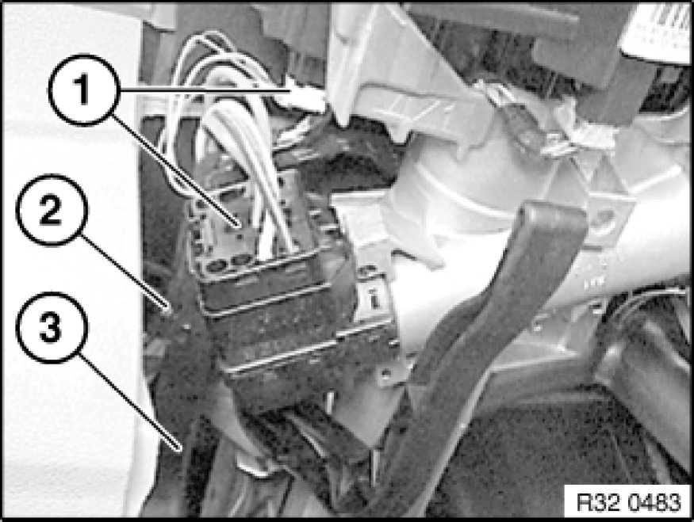
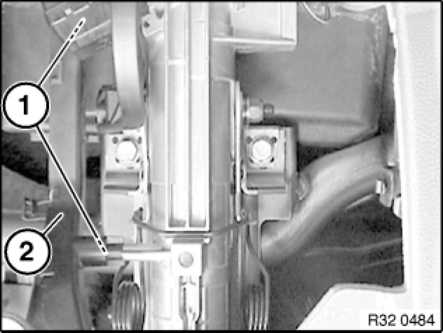
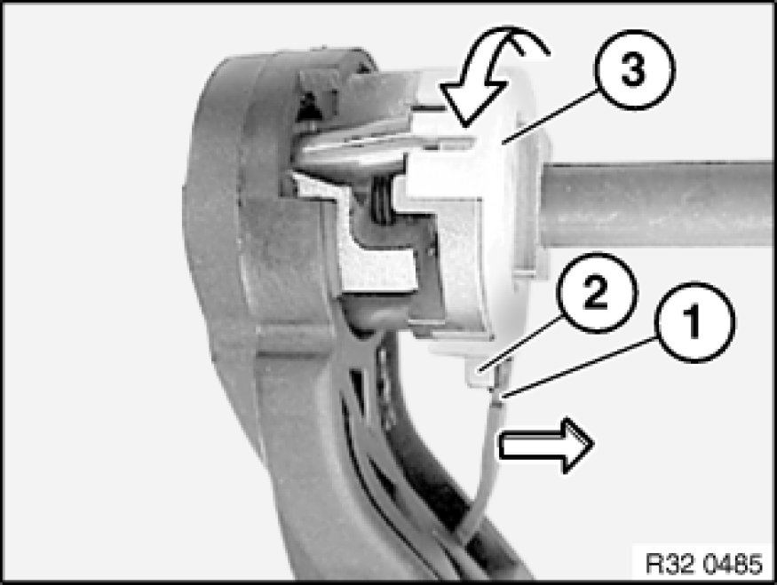
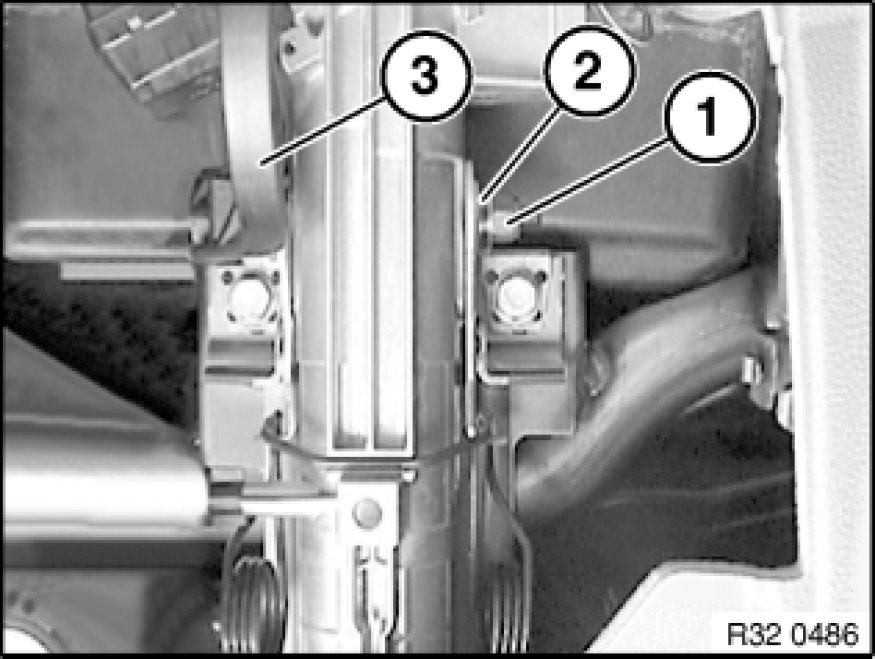

Replacing Adjusting Lever for Steering Column
32 31 241 - Replacing adjusting lever for steering column

Necessary preliminary tasks:
- Remove lower section of trim Removing and Installing/Replacing Lower Section of Steering Column Trim

Disconnect plug connections (1).
Remove wiring harness (2) from cable guide (3).

Release screws (1), remove cable guide (2).

Important!
Clamping bearing must be held down until secured.
Securing clamping bearing:
- Pull retaining tab (1) in direction of steering column.
- Turn clamping bearing head (3) so that pin (2) on clamping bearing is held by retaining tab (1).

Important!
The secure fitting must not be released when the adjusting lever (3) is removed.
Unscrew nut (1).
Remove needle bearing (2) and washer.
Pull out adjusting lever (3).
Installation Note:
- Replace nut (1).
- Move adjusting lever (3) into locked position.
- Fit washer and needle bearing (2) and screw on nut (1) until it contacts needle bearing (2).
- Open and close adjusting lever (3).
- Tighten nut (1) to torque value 1.
Tightening torque: 32 31 3AZ [1][2]Specifications.
- Open and close adjusting lever (3) again.
- Tighten nut (1) to torque value 2.
Tightening torque: 32 31 3AZ [1][2]Specifications.
- Open and close adjusting lever (3) again.
- Tighten nut (1) again to torque value 2.
Tightening torque: 32 31 3AZ [1][2]Specifications.
Important!
Observe tightening torques without fail!
The clamping force is adjusted by means of the tightening torque.